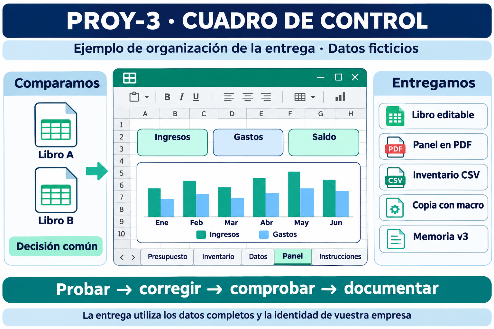

PROY-3 · Construimos el cuadro de control
Entrega en Aules: una por pareja · RA3 · Producto: libro de gestión, panel y memoria de empresa v3.
1. Mensaje de gerencia
«Ya tenemos los documentos de nuestra empresa. Ahora necesitamos cambiar un presupuesto sin rehacer las cuentas, saber qué productos reponer y consultar seis meses de ingresos y gastos en una página. Otra persona debe poder abrir el libro, introducir datos y comprobar los resultados siguiendo vuestras instrucciones».
Vais a integrar las soluciones individuales de ACT-3.1–ACT-3.4 en un único libro de empresa. Conservad la identidad y las decisiones de PROY-2. Cada integrante mantiene sus entregas individuales; el proyecto recoge la solución acordada y las pruebas del archivo común.
Ejemplo visual del proyecto

Fijaos en el recorrido: comparar, decidir, integrar y comprobar. El gráfico es esquemático y no representa los resultados de los datos comunes. Vuestra entrega debe utilizar los seis meses completos y la identidad de vuestra empresa; la memoria v3 se entrega en editable y PDF. Consultad el apartado 8 para los nombres y formatos exactos y la condición de la copia con macro.
2. Punto de partida y tiempo
Tened abiertos:
- La última carpeta de empresa y
EMPRESA_EquipoXXde PROY-2. - Los libros y las pruebas de ambos integrantes de ACT-3.1–ACT-3.4.
- Los datos comunes y la rúbrica con batería de pruebas.
La integración se realiza dentro del cierre de ACT-3.4: sus 6 horas incluyen auditoría, automatización, control individual de 40 minutos, integración y defensa. PROY-3 no añade horas a las 34 de UD03. Aprovechad las comparaciones realizadas durante las actividades para llegar al cierre con una base elegida. La fecha objetivo común para A/B la indicará el profesor; no hay una fecha fijada en este documento.
3. Comparad antes de integrar
- Conservad los originales individuales y una copia de la versión 2 de empresa.
- Abrid ambos libros y comprobad una fórmula, un aviso y la actualización del panel.
- Elegid un libro como base. Incorporad las mejoras útiles del otro y volved a probarlas: copiar hojas puede modificar referencias, rangos y validaciones.
- Alternad los roles de producción y calidad. Cada integrante debe revisar algo que haya integrado su compañero.
- Registrad los acuerdos en la memoria, con referencias a hojas o celdas del libro final.
Usad una tabla como esta, completada con vuestro trabajo real:
| Parte | Solución de A | Solución de B | Decisión común y motivo | Comprobación en el libro final |
|---|---|---|---|---|
| Presupuesto | [Referencia del impuesto y diseño] | [Referencia y diseño] | [Qué conservamos y por qué] | [Celda y prueba] |
| Inventario | [Avisos y validación] | [Avisos y validación] | [Elección justificada] | [Código y prueba] |
| Panel | [Resumen y gráfico] | [Resumen y gráfico] | [Elección justificada] | [Rango y actualización] |
| Revisión | [Fallo o limitación detectados] | [Fallo o limitación detectados] | [Corrección o pendiente] | [Resultado observado] |
4. Qué debe contener el libro común
| Hoja | Contenido mínimo | Qué debe poder comprobar quien lo use |
|---|---|---|
| Presupuesto | Cuatro servicios de los datos comunes; cantidad, precio e importe; subtotal, impuesto configurable y total; precio medio, máximo y mínimo | Cambiar cantidad, precio o impuesto actualiza los resultados; el impuesto no se suma dos veces |
| Inventario | Seis productos P01–P06; datos de origen, stock, valor, aviso, validación, filtro y búsqueda exacta por código | El aviso incluye el caso stock igual al mínimo; se conserva la relación entre código y producto al ordenar |
| Datos | Doce registros de los seis meses, con Mes, Tipo, Concepto e Importe | Los importes son numéricos y Tipo utiliza Ingreso o Gasto |
| Panel | Ingresos, gastos y saldo del periodo; resumen mensual mediante tabla dinámica, gráfico de ingresos/gastos y dos conclusiones con cifras | Los totales se pueden rastrear hasta Datos; al cambiar un importe y actualizar la tabla dinámica cambia el gráfico |
| Instrucciones | Aplicación y versión usadas, entradas editables, actualización, avisos, impresión, pruebas y limitaciones | Otra persona puede usar el libro y repetir una prueba sin que se lo expliquéis de palabra |
Podéis añadir Listas para las validaciones. El impuesto puede mantenerse en la celda usada en ACT-3.1: identificadla en Instrucciones y utilizad referencias absolutas. Una hoja de configuración separada es opcional; evitad mantener dos valores distintos para el mismo impuesto.
Separad visualmente las entradas de las fórmulas e indicadlo también mediante una leyenda escrita. Proteged al menos una hoja dejando editables sus entradas. Conservad la fecha de revisión, la etiqueta código-producto y la imagen propia o con procedencia documentada de ACT-3.4. Las zonas de práctica de referencias mixtas pueden quedar identificadas fuera del área de impresión.
Del presupuesto de UD02 al libro
Reutilizad nombre de empresa, colores, estructura documental y criterio de presentación de PROY-2. Para las comprobaciones comunes, mantened los cuatro servicios, cantidades y precios de UD03. Si el presupuesto de UD02 utilizaba otros conceptos, explicad la adaptación en la memoria. El documento anterior se conserva como antecedente; las cuentas de esta versión deben proceder de fórmulas.
El 21 % de los datos comunes es un supuesto didáctico configurable. Los ingresos y gastos mensuales son datos ficticios independientes del presupuesto y se trabajan sin impuestos. No suméis el total del presupuesto a los ingresos mensuales ni presentéis el saldo simplificado como una contabilidad completa.
Referencias visuales
Revisad los ejemplos de presupuesto, inventario, panel y auditoría. Sirven para interpretar la organización del producto. La entrega utiliza los datos completos y la identidad de vuestra empresa.
5. Comprobad el archivo que vais a entregar
Repetid en el libro común las nueve pruebas de la batería de UD03. Las pruebas individuales sirven como antecedente, pero no demuestran que la integración funcione.
- Cambiar una cantidad y comprobar línea, subtotal, impuesto y total.
- Cambiar el impuesto configurable y revisar las referencias.
- Probar stock inferior, igual y superior al mínimo.
- Intentar una cantidad negativa en una entrada validada.
- Buscar un código existente y otro inexistente.
- Cambiar un ingreso, actualizar la tabla dinámica y comprobar resumen y gráfico.
- Editar una entrada y comprobar que una fórmula protegida no se puede sobrescribir.
- Ejecutar y explicar la macro breve de formato en una copia compatible.
- Reabrir el editable y revisar el PDF exportado.
Registrad las pruebas en Instrucciones; podéis usar varias filas para los tres casos de stock:
| Prueba y celda/rango | Valor inicial y cambio | Resultado esperado | Resultado observado | Corrección y repetición | Restauración y responsable |
|---|---|---|---|---|---|
| [Qué se comprueba] | [Una modificación cada vez] | [Antes de ejecutar] | [Lo que realmente ocurre] | [Acción y resultado, o no procede] | [Valor restaurado y quién verifica] |
No copiéis resultados del ejemplo ni marquéis una prueba como superada si no la habéis realizado. Registrad al menos la corrección comprobada de ACT-3.4; si el libro no presenta fallos conocidos, utilizad la copia con el fallo introducido por el docente e identificadla como prueba de reparación. Restaurad los datos iniciales antes de exportar.
Copia con macro
Reutilizad la macro mínima de formato de ACT-3.4 y probad su alcance en PruebaMacro. No necesitáis programar ni automatizar el libro completo. En Calc guardad la copia en ODS; en Excel de escritorio, en XLSM. Anotad aplicación, nombre de macro, pasos de ejecución y si actúa sobre la selección o posiciones fijas.
Seguid el taller guiado de ACT-3.4, que explica cómo grabar, guardar dentro del documento, ejecutar y comprobar tras reabrir. Cread la copia con macro a partir del libro común final y repetid allí la grabación breve: copiar una hoja individual no garantiza transferir su macro. Las evidencias individuales se conservan; esta prueba confirma el funcionamiento del archivo de pareja.
Si el aula no dispone de grabadora, registrad la limitación y la demostración acordada con el profesor. La ejecución individual queda pendiente cuando no se ha observado. La copia sin macros debe permitir comprobar todas las operaciones principales.
6. Ampliad la memoria de empresa a v3
Trabajad sobre una copia de EMPRESA_EquipoXX v2. Incorporad el bloque Cuadro de control · UD03 antes de las conclusiones. Conservad la historia anterior y actualizad portada, índice, ficha de empresa y registros existentes.
Cuadro de control · UD03
Necesidad y continuidad con el sistema documental
Comparación de las dos soluciones y decisiones comunes
Presupuesto, inventario y panel: uso y referencias al libro
Pruebas, correcciones y limitaciones
Datos preparados para UD04
Conclusiones y pendientes actualizados
Registros de decisiones, versiones y contribuciones actualizados
Redactad una síntesis con referencias precisas. El libro contiene las fórmulas y el registro detallado de pruebas; la memoria explica qué adoptáis, por qué y con qué evidencia. No hace falta pegar las cuatro actividades completas ni duplicar tablas de pruebas.
Ejemplo de redacción para completar con resultados propios:
Comparamos [alternativa de A] y [alternativa de B]. Adoptamos [decisión] porque [motivo]. En el libro común lo comprobamos modificando [entrada de hoja y celda]. Esperábamos [resultado] y observamos [resultado real]. La evidencia está en [prueba]. Queda pendiente [limitación, si existe].
En el catálogo de productos de la memoria indicad nombre, ruta relativa, función y autoría de cada archivo entregado. Las contribuciones deben describir acciones comprobables: integrar una validación, revisar una fórmula o repetir una prueba concreta. Registrad las fechas reales.
7. Preparad el intercambio con UD04
Exportad la tabla final de Inventario como PROY-3_EquipoXX_Inventario.csv, con encabezados y seis productos. Incluid sus columnas de datos y los valores calculados de Stock, Valor y Aviso. Excluid totales, imágenes y la zona de búsqueda. El CSV guarda valores; las fórmulas se conservan en el libro.
Volved a abrir el CSV y comprobad códigos P01–P06, acentos, columnas, decimales y número de registros. Anotad en Instrucciones la codificación y el separador usados. Conservad códigos estables y una fila por producto. Si necesitáis exportar una hoja temporal, eliminad de ella las zonas ajenas a la tabla antes de guardar; mantened intacto el libro principal.
En UD04 utilizaréis esta tabla y el catálogo de servicios de la empresa como punto de partida para el modelo de datos. Clientes, relaciones e incidencias se desarrollarán allí. En este hito no se exige crear esas tablas ni un inventario por movimientos.
8. Entrega de la pareja
Organizad una carpeta PROY-3_EquipoXX con estos archivos y entregadla comprimida en ZIP en Aules:
| Archivo | Contenido |
|---|---|
PROY-3_EquipoXX_Control.ods o .xlsx |
Libro principal funcional sin necesidad de ejecutar macros; Instrucciones incluye pruebas |
PROY-3_EquipoXX_Panel.pdf |
Panel de los seis meses en una página legible, con título, periodo, unidades, gráfico y conclusiones |
PROY-3_EquipoXX_Inventario.csv |
Tabla de intercambio reabierta y comprobada |
PROY-3_EquipoXX_Macro.ods o .xlsm |
Copia compatible con la macro y su prueba; si no se pudo realizar, limitación registrada según lo acordado con el profesor |
EMPRESA_EquipoXX.odt o .docx, y EMPRESA_EquipoXX.pdf |
Dos formatos de la misma memoria actualizada a v3, con catálogo y registros |
Las referencias al libro y al CSV deben funcionar dentro de la carpeta entregada. No incluyáis entregas de otros equipos ni datos personales ajenos al trabajo. Indicad fuentes y uso de IA cuando corresponda. Conservad aparte las versiones anteriores y los originales individuales.
9. Evaluación y defensa individual
Se utiliza la distribución común de los hitos de empresa:
| Apartado | Puntos | Evidencia en PROY-3 |
|---|---|---|
| Producto técnico y pruebas | 4 | Libro funcional, CSV, PDF y pruebas de integración |
| Continuidad con la empresa | 2 | Identidad y presupuesto de UD02, memoria acumulativa y datos preparados para UD04 |
| Comparación e integración | 1,5 | Alternativas de ambos y decisiones justificadas con comprobaciones |
| Documentación, orden y accesibilidad | 1 | Instrucciones utilizables, catálogo, archivos accesibles y panel legible |
| Versiones y contribuciones | 0,5 | Historial real y revisión cruzada de ambos integrantes |
| Defensa individual | 1 | Explicación y modificación comprobadas por cada integrante |
El bloque técnico de 4 puntos se obtiene aplicando la rúbrica técnica de UD03, sobre 10, y multiplicando su resultado por 0,4. Así se conserva su reparto 30/25/20/15/10 sin sumar dos veces la misma nota técnica. En los otros apartados se valora la integración de empresa; un mismo fallo no se penaliza de nuevo por arrastre.
RA3 es la referencia de aprendizaje. Las evidencias abarcan fórmulas y referencias, funciones, gráficos, análisis, intercambio y automatización según la auditoría curricular de trabajo (CA a–h). Su correspondencia literal con la programación oficial sigue pendiente de contraste; este enunciado no incorpora textos normativos nuevos.
Estas ponderaciones internas mantienen el reparto general del módulo: encargos y proyectos 50 %, prácticas individuales 20 %, controles prácticos 20 % y portafolio/defensa/seguimiento 10 %. La defensa aquí descrita verifica el hito; no se registra automáticamente como una segunda nota en otra categoría.
Cada integrante, durante el trabajo autónomo de la clase, deberá:
- Explicar una fórmula elegida por el profesor y el origen de sus datos.
- Cambiar una entrada distinta de la de su compañero, anticipar el resultado y comprobarlo.
- Mostrar una decisión común y su aportación verificable; restaurar los datos al terminar.
Ambos deben comprender el libro completo. La valoración individual se apoya en la defensa y en las contribuciones observables.
10. Lista final, apoyos y mejora
- [ ] Seguimos con la misma empresa y conservamos la versión 2.
- [ ] El libro incluye las cinco hojas y los datos completos de la unidad.
- [ ] Las fórmulas y avisos funcionan tras la integración y la tabla dinámica se actualiza.
- [ ] Las nueve pruebas tienen resultado observado o limitación explícita.
- [ ] El CSV se ha reabierto y el PDF del panel se lee en una página.
- [ ] La memoria v3 explica acuerdos y enlaza los productos; el índice está actualizado.
- [ ] Los archivos entregados se abren desde la carpeta final.
- [ ] Ambos podemos explicar y modificar el libro.
Apoyo: partid del libro más estable, revisad primero dos filas y usad los asistentes ya trabajados. Si una parte falla, reparad y repetid su prueba antes de cambiar el diseño. Ampliación opcional: mejorad la navegación o las instrucciones sin añadir hojas de gestión complejas. Para recuperar, corregid los apartados pendientes, repetid sus pruebas y demostrad individualmente el aprendizaje afectado.